Why it exists
Holdfast is a free reef log that reads your test results in plain words and tells you the one thing to do next. It runs in any phone or computer browser, with no account, and you can add it to your home screen like an app.
Every result in one place, charted against your own targets.
Each reading in plain words: good, keep an eye on it, or needs attention, and why.
One suggested next step, and math that keeps corrections gentle.
One example from the builder: a newly calibrated salinity meter read 38.6 ppt, and water swaps started. Checked against two more calibration packets, the meter was fine and the 38.6 was a bad test. That's why Holdfast asks for a retest before it suggests any change, and keeps a calibration log for every piece of test gear.
On your phone, go to reef-log.sprcoastie30.workers.dev. No account or download needed.
iPhone (Safari): Share, then Add to Home Screen. Android (Chrome): menu, then Add to Home screen or Install app.
Pick your tank size, the month you set it up, what it's for and your salt. That drives all the water-volume and dosing math. For an all-in-one tank, choose that option and type the total volume the maker lists. You can change any of it later with Tank profile.
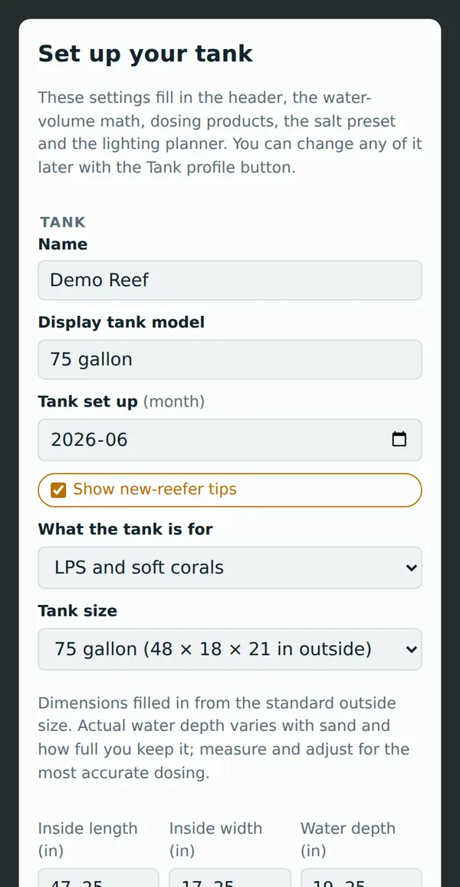
Holdfast looks at your latest tests, your schedule and your tank's age, then shows the single most important thing to do: finish your cycle, retest something, a reading out of range, start dosing, or tasks that are due. Below that are your latest readings against your targets.
Most days it says Nothing needs doing today. That's the goal: a steady tank.
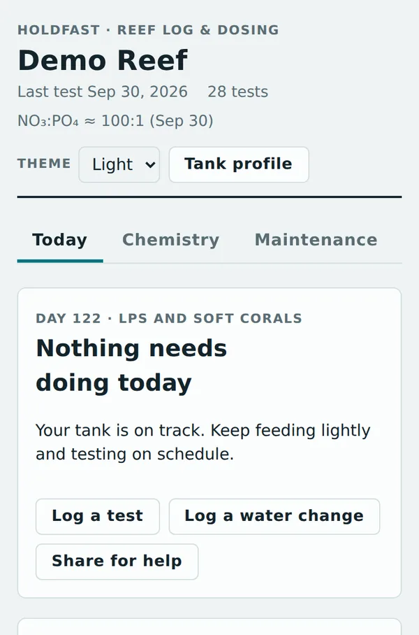
Each reading is marked Good, Keep an eye on it or Needs attention against your own targets.
Tap it for what the parameter does, the likely causes when it's high or low, what to do, and what to avoid, like chasing pH with buffers or stripping nutrients to zero.
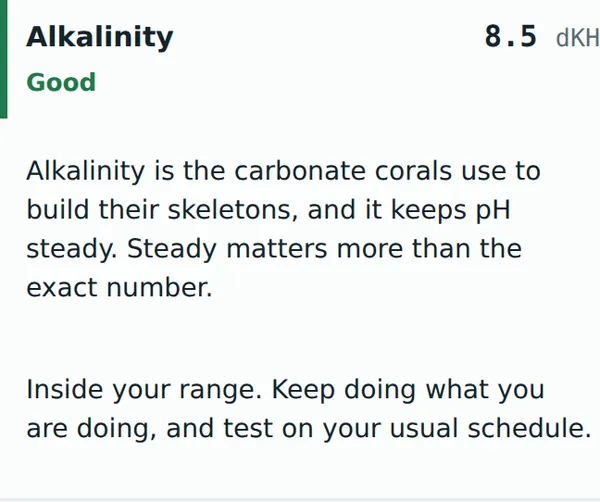
Log only what you tested and leave the rest blank. Every parameter gets a chart with your target range shaded. Water changes, dosing changes and new livestock show up as markers, so you can see cause and effect. The app even catches a target set above what your salt mixes to.
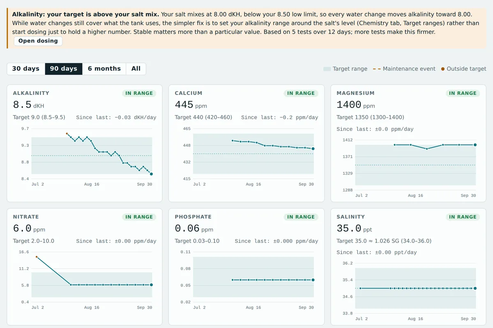
If a reading jumps more than a tank normally moves between tests, Holdfast flags it and holds any dosing suggestion.
Bad tests happen: an old reagent, the wrong water in the vial, a misread color. A retest costs a few minutes; overcorrecting can cost corals.
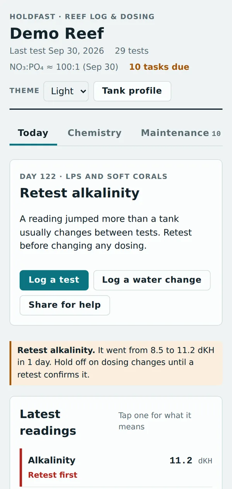
A cycle tracker follows ammonia and nitrite in a new tank.
Ready for… checks your logged tests and tank age before first fish, soft corals, LPS and SPS, and shows exactly what's still missing. These are common hobby guidelines, not guarantees; healthy, steady animals are the real sign.
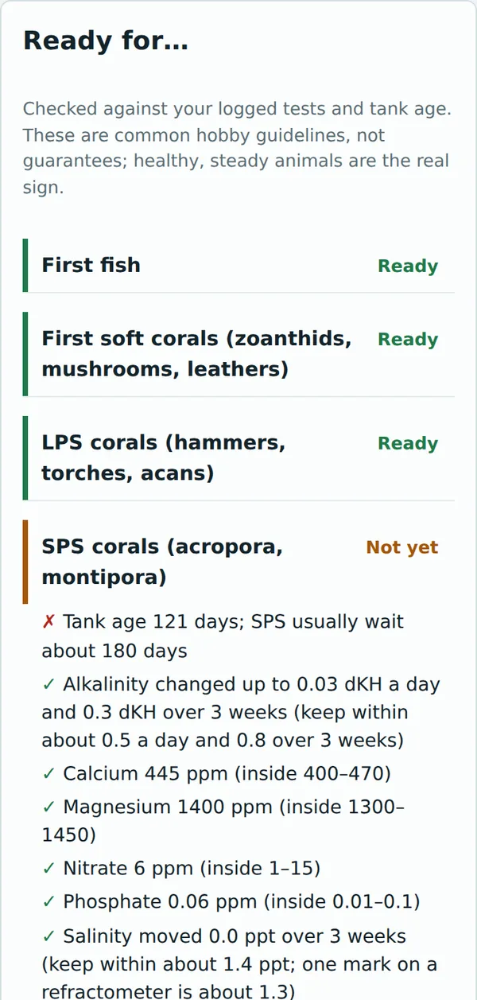
Log each water change with its amount. Holdfast compares what your tank uses with what your water changes put back.
In a young tank, regular water changes usually supply everything corals use. Hold off on dosing until water changes stop keeping up; the app tells you when that happens, and the Dosing tab works out the daily amount from your own test history.
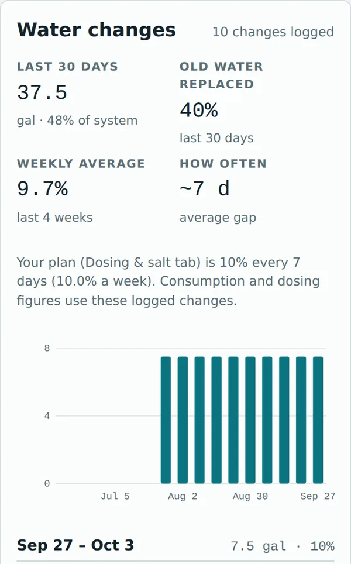
Enter where you are and where you want to be. Holdfast plans each day's swap of tank water for RO/DI, or saltwater, or salt to dissolve.
Calibrate first. Use 35 ppt calibration fluid (not RO water) and retest before acting. A surprising number is more often a bad test than a real change.
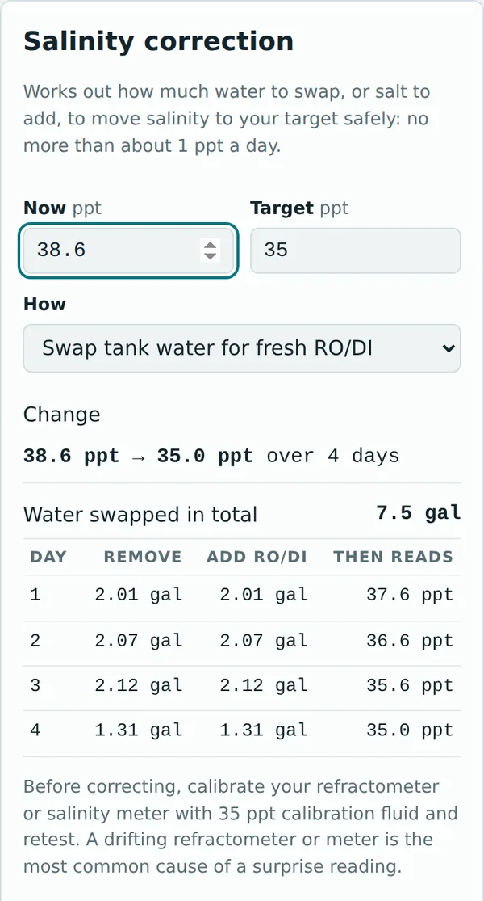
One tap fills in a sensible starting schedule: tests, glass cleaning, skimmer cup, RO/DI checks, water changes. Adjust it to your tank. Tests mark themselves done when you log them.
Download the schedule to your phone's calendar for reminders even when the app is closed, and track RO/DI filters, test kit expiry and calibration.
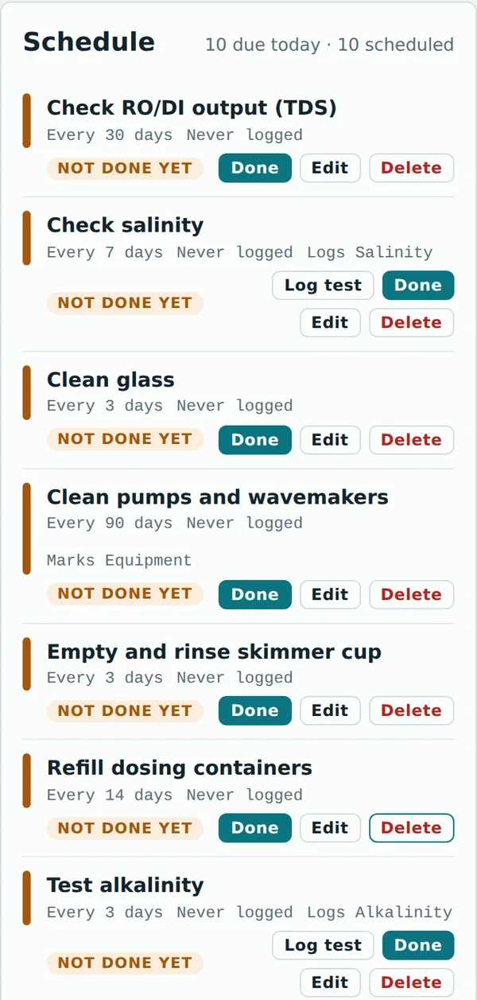
Log settings for any fixture, so every light change shows up on your chemistry charts; light changes are a common cause of coral losses, so raise intensity slowly. Noopsyche K7 owners can build a program and export it as a QR code for the Noopsyche app.
With a PAR meter, record a PAR map at three heights and see where soft corals (about 50–150 PAR), LPS (about 100–250) and SPS (about 250–450) fit.
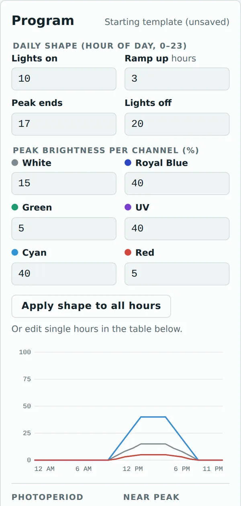
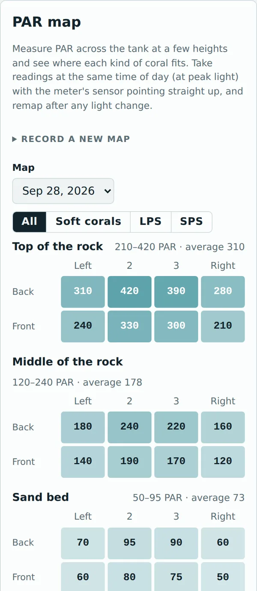
Everything is saved in your browser on your phone or computer.
Log a test with no signal. It's all there next time.
Live sync between devices is coming in a future update. Until then, a test logged on your phone won't show up on your computer. Pick one device as your main log.
On any screen, scroll to the bottom and tap Data & backup.
Tap Download full backup. It saves one file with everything, photos included, named like holdfast-backup-2026-09-30.json.
Keep a copy somewhere safe: email it to yourself, or put it in iCloud or Google Drive.
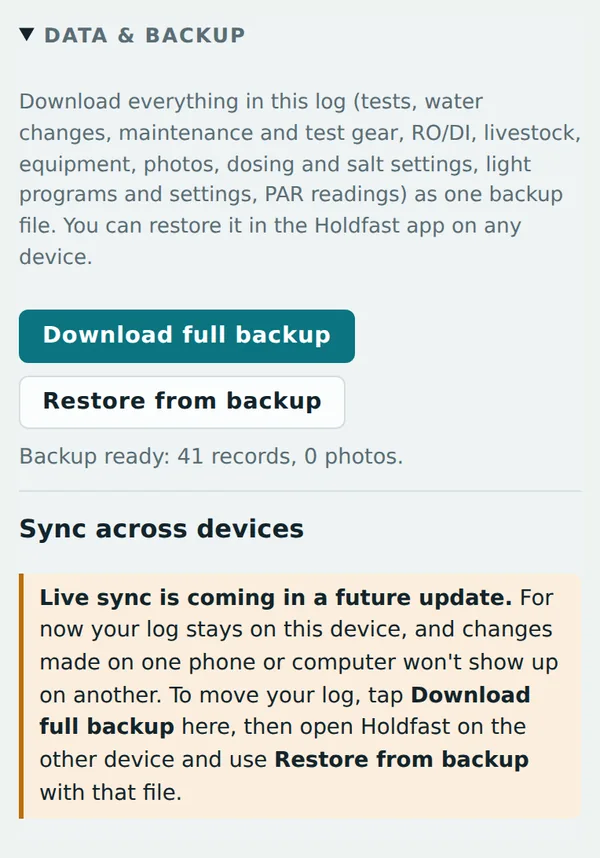
Get the backup file onto that device (AirDrop, email, iCloud or Google Drive).
Open Holdfast there. If the tank setup screen appears, tap Skip for now; the backup brings your tank profile with it.
In Data & backup, tap Restore from backup and choose the file.
Tap Replace my data. Restoring replaces everything on that device; it doesn't merge two logs.
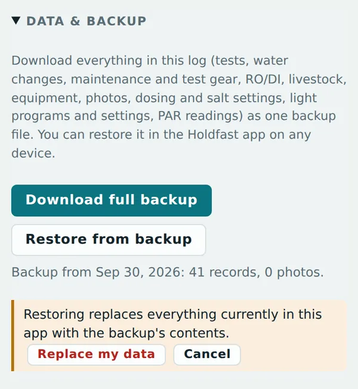
Holdfast is only as good as what you put into it. Every suggestion comes from the tests, water changes and dosing you log; old, missing or wrong numbers give wrong advice. Stale tests are flagged, overdue tasks show on the Today screen, and every piece of test gear has a calibration reminder, but no app replaces looking at your tank every day.
The app reminds you. If your last test is two weeks old, it says so first.
Every test, water change, dosing change and new animal.
A drifting meter or old reagent makes every number after it wrong.